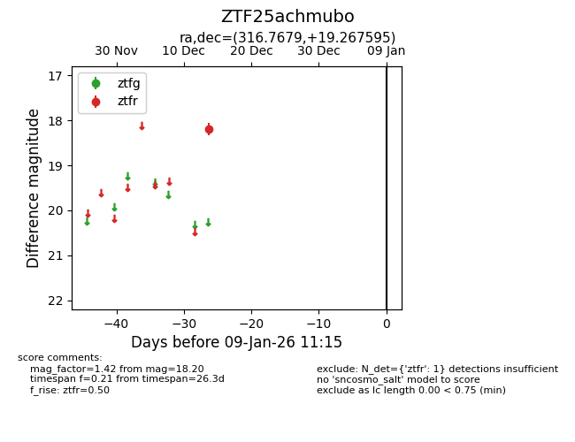
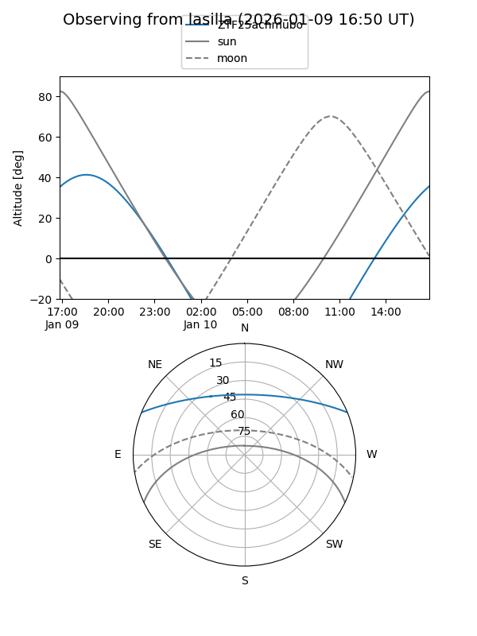
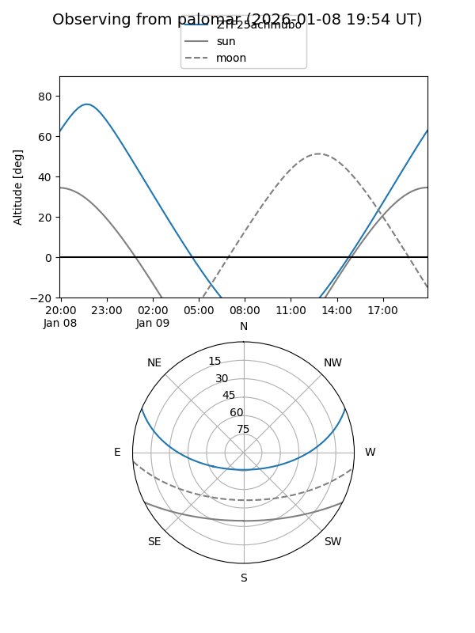

ZTF25achmubo
Target ZTF25achmubo at 2025-12-18 11:18
Aliases and brokers:
FINK: fink-portal.org/ZTF25achmubo
Lasair: lasair-ztf.lsst.ac.uk/objects/ZTF25achmubo
ALeRCE: alerce.online/object/ZTF25achmubo
alt names
ZTF25achmubo (ztf,fink_ztf)
Coordinates:
equatorial (ra, dec) = 316.7679,+19.26760
equatorial (HMS+DMS) = 21:07:04.28,+19:16:03.34
galactic (l, b) = (67.2009,-18.55524)
Photometry
last ztfr=18.20
1 ztfr detections
Lightcurve

Visibility


Additional plots